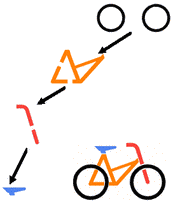
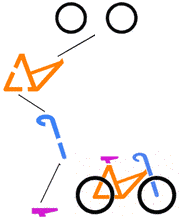
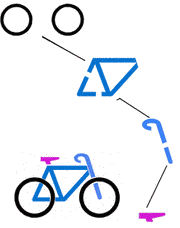

La solution
Trois vélos correspondent à un chemin partant des deux roues et descendant dans le schéma :
|  |  |  |  |
| Pour le vélo 1, on descend à gauche, puis à gauche, et encore à gauche. | Pour le vélo 3, on descend à gauche, puis à droite, et enfin à gauche. | Pour le vélo 4, on descend à droite, puis à droite, et enfin à gauche. | En revanche, le vélo 2 n'est pas décrit. Il faudrait d'abord descendre à gauche, puis à droite, mais là on est coincé car aucune selle ne correspond. La bonne réponse est donc 2. |
C'est de l'informatique
Le schéma décrit dans ce sujet s'appelle un arbre de décision. Il s'agit d'une manière compacte de représenter un ensemble d'objets.
Ici, le schéma décrit 7 vélos possibles, en ne dessinant que 14 éléments reliés par des traits. Si on avait voulu dessiner les 7 vélos explicitement, vu que chaque vélo contient 4 éléments, on aurait eu besoin de dessiner 7 fois 4 éléments, soit 28 éléments au total : deux fois plus qu'avec l'arbre de décision !